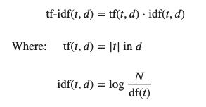

Word embedding using tf-idf matrices
Contents
Word embedding using tf-idf matrices¶
This notebook explores using tf-idf matrices to create these company embeddings.
Tf-Idf stands for term frequency - inverse document frequency. Each row in this matrix represents one document (in this case, one annaul report of a given company) and each column represents a word (or a sequence of words called an n-gram, like “University of Toronto”).
A term frequency matrix has the count of occurences of a given word for each document, while a tf-idf matrix performs a transformation on that term frequency matrix. The computation for each cell is as follows:

Where t is the current term we are process, and d is the current document we are looking in
Where N is the total number of documents in the document set and df(t) is the document frequency of t;
The document frequency is the number of documents in the document set that contain the term t
^ From sklearn
Why do we do this?
The purpose of a tf-idf transformation is give more importance to words that occur less frequently among all the documents. Common terms among financial documents like these could contain “financial” or “business” but they don’t provide any extra information to help us identify what makes a given company unique. tf-idf augments the term counts by giving higher weights to terms that are less common within the collection of documents but mentioned frequently in one document, implying these terms make this document special.
We’ll be training two models from sklearn’s feature_extraction, first using a CountVectorizer to obtain term-frequencies of terms of size 2-4 (we do this as some terms such as “cloud computing” carry more meaning than those words do separately. We also only select the top 600 words by freqeuncy as the columns.
The result is then piped into a TfidfTransformer, augmenting the values so the values more accurately represent the importance of a given term.
import pandas as pd
import numpy as np
import sys
sys.path.insert(0, '..')
%load_ext autoreload
%autoreload 2
%aimport std_func
# Hide warnings
import warnings
warnings.filterwarnings("ignore")
from sklearn.feature_extraction.text import TfidfTransformer
from sklearn.feature_extraction.text import CountVectorizer
from sklearn.pipeline import Pipeline
df = pd.read_csv("../data/preprocessed.csv")
pipe = Pipeline([('count', CountVectorizer(ngram_range = (2,4),
stop_words = 'english', max_features = 600)),
('tfidf', TfidfTransformer())]).fit(df["coDescription_stopwords"])
Here are some of the terms we are left with after passing all our documents through the CountVectorizer and TfidfTransformer.
feature_names = pd.DataFrame(pipe['count'].get_feature_names_out())
feature_names.sample(5)
---------------------------------------------------------------------------
NameError Traceback (most recent call last)
Input In [2], in <cell line: 1>()
----> 1 feature_names = pd.DataFrame(pipe['count'].get_feature_names_out())
2 feature_names.sample(5)
NameError: name 'pipe' is not defined
As you can see below, the matrix is quite sparse since some companies don’t contain any occurrences of some terms.
# The tf-idf matrix
tfidf = pd.DataFrame(pipe.transform(df["coDescription_stopwords"]).toarray())
tfidf.head()
---------------------------------------------------------------------------
NameError Traceback (most recent call last)
Input In [3], in <cell line: 2>()
1 # The tf-idf matrix
----> 2 tfidf = pd.DataFrame(pipe.transform(df["coDescription_stopwords"]).toarray())
3 tfidf.head()
NameError: name 'pipe' is not defined
This is a 2D PCA reduction of that 600 dimensional space. We’re plotting the first two dimensions, which capture the most variance.
---------------------------------------------------------------------------
NameError Traceback (most recent call last)
Input In [4], in <cell line: 1>()
----> 1 plot = std_func.pca_visualize_2d(tfidf, df.loc[:,["name","SIC_desc"]])
NameError: name 'std_func' is not defined
And this is a 3-dimensional plot which plots the first three dimensions. You can interact with it as well.
---------------------------------------------------------------------------
NameError Traceback (most recent call last)
Input In [5], in <cell line: 1>()
----> 1 std_func.pca_visualize_3d(plot)
NameError: name 'std_func' is not defined
We can see from the above PCA plot of the first three dimensions that there are clearly terms which certain industries are more drawn toward. Unfortunately, the Real Estate and Software industries still seem quite closely clustered.
We can look at the explained variance of each dimension the PCA embedding of our tf-idf matrix produced below:
# From the explained variance ratio, we see that the top three dimensions don't actually explain that much of the variation that exists within our data/companies.
plot[0].explained_variance_ratio_
---------------------------------------------------------------------------
NameError Traceback (most recent call last)
Input In [6], in <cell line: 2>()
1 # From the explained variance ratio, we see that the top three dimensions don't actually explain that much of the variation that exists within our data/companies.
----> 2 plot[0].explained_variance_ratio_
NameError: name 'plot' is not defined
And the total variance explained by the top three dimensions:
plot[0].explained_variance_ratio_[0:3].sum()
---------------------------------------------------------------------------
NameError Traceback (most recent call last)
Input In [7], in <cell line: 1>()
----> 1 plot[0].explained_variance_ratio_[0:3].sum()
NameError: name 'plot' is not defined
Based on the above, the top three principle components only explain 27.9% of the total variance that exists within the data.
If you’d like to analyze how much a given term contributes to each of the 10 dimensions, please see the DataFrame hidden below:
---------------------------------------------------------------------------
NameError Traceback (most recent call last)
Input In [8], in <cell line: 1>()
----> 1 components = pd.DataFrame(plot[0].components_, columns = feature_names)
2 components.reindex(components.abs().sort_values(0, axis = 1).index)
NameError: name 'plot' is not defined
And finally, this DataFrame is sorted by the amount each term contributes to the first dimension, which captures the most variance in our data. This tells us that the largest variations/spread of companies along the x axis in the 2D PCA plot measures how much a company has to with with Oil & Gas, or real estate.
components.abs().sort_values(2, axis = 1, ascending = False)
---------------------------------------------------------------------------
NameError Traceback (most recent call last)
Input In [9], in <cell line: 1>()
----> 1 components.abs().sort_values(2, axis = 1, ascending = False)
NameError: name 'components' is not defined
Performance Evaluation¶
conf_mat = std_func.conf_mat(tfidf,df)
---------------------------------------------------------------------------
NameError Traceback (most recent call last)
Input In [10], in <cell line: 1>()
----> 1 conf_mat = std_func.conf_mat(tfidf,df)
NameError: name 'std_func' is not defined
dot_product_df, accuracy, cm = std_func.dot_product(tfidf,df)
from sklearn.metrics import classification_report
print(classification_report(dot_product_df["y_true"], dot_product_df["y_pred"], target_names=df["SIC_desc"].unique()))
---------------------------------------------------------------------------
NameError Traceback (most recent call last)
Input In [11], in <cell line: 1>()
----> 1 dot_product_df, accuracy, cm = std_func.dot_product(tfidf,df)
2 from sklearn.metrics import classification_report
3 print(classification_report(dot_product_df["y_true"], dot_product_df["y_pred"], target_names=df["SIC_desc"].unique()))
NameError: name 'std_func' is not defined
From the confusion matrix and the classification report, we can conclude that the tf-idf company embedding does a good job overall at classifying the category of the companies, except for the Pharmaceutical industry. More specifically, this model is best at classifying companies in the Commerical Banking industry.